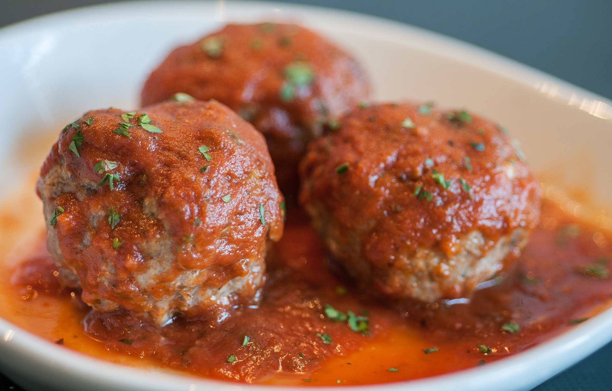
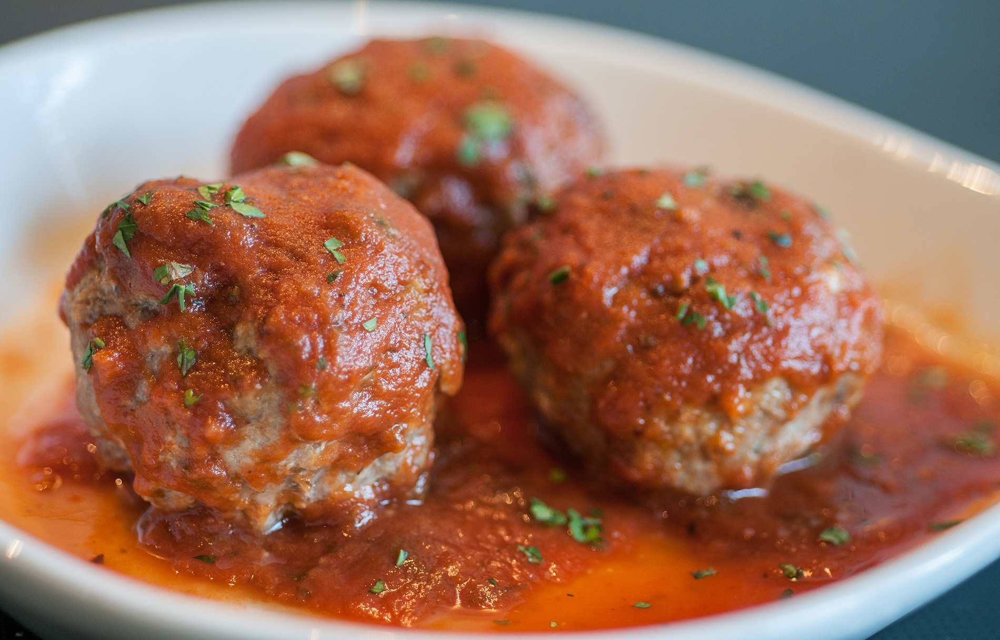

All About Ma Name
My actual name is Aleef Noor. My first name could mean a leaf but it also is the
first letter of the arabic alphabet.
You know enough history about my first name. Now, let us get to know my last name.
My last name is Noor. Noor means light.
So, I like to think my name means First Light.
Since now you are familiar with my name, let us look at my interests.
A leaf. Yes, I love this joke


 
